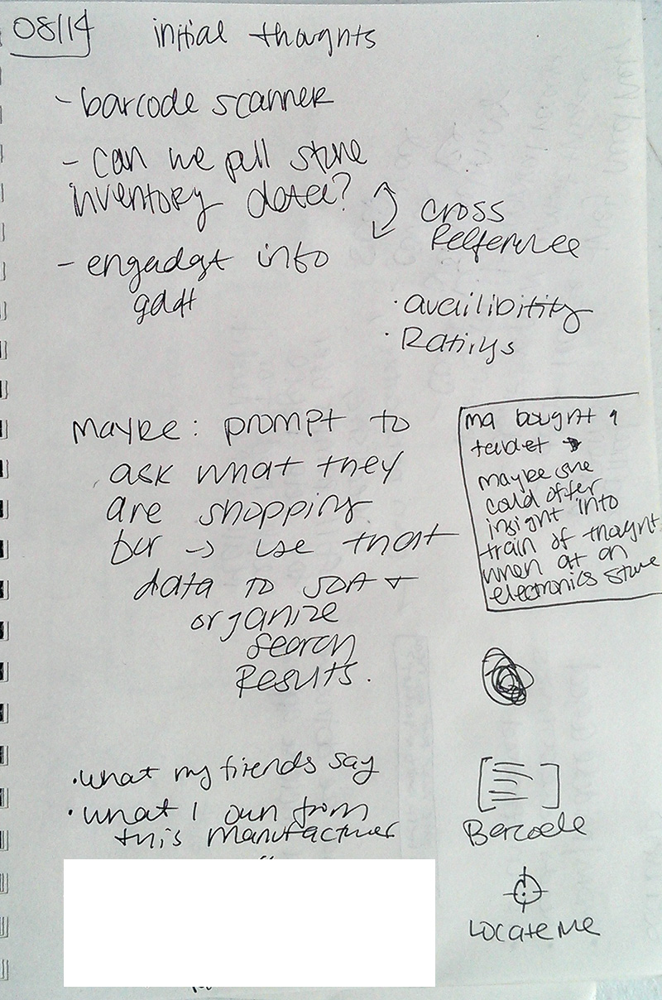
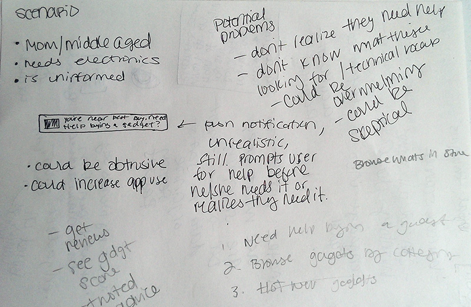
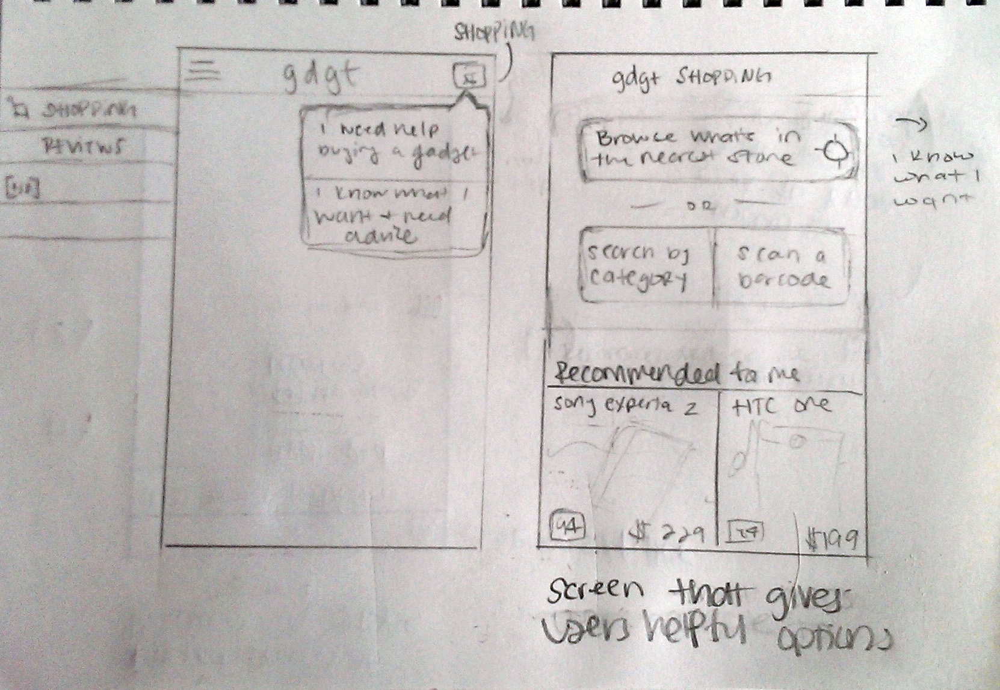
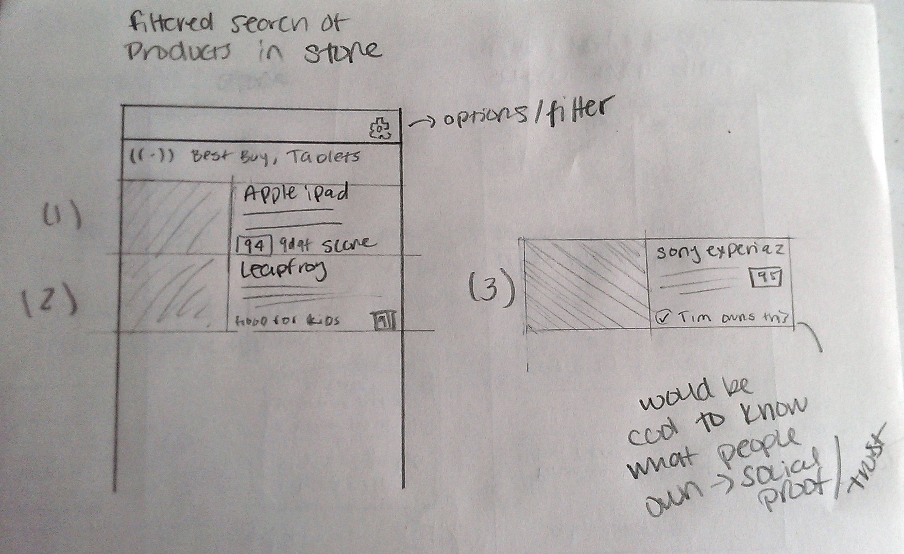

The Brief
Let's imagine that Engadget wants to release a companion mobile app that has one and only one purpose: to help the user shopping for a consumer electronics product make an educated buying decision. We should harness the rich product data from Engadget.com and gdgt.com.
A smartphone-owning mom or dad walks into Best Buy and has no idea which router to buy, but there are 50 in the store to choose from, and it's all confusing and intimidating. How can we help?
Immidately after reading the brief, I took some notes on things that came to mind. I wanted the experience to be comforting and easy, almost doing some of the thinking for the user.
Highlights from my notes
- Can we pull inventory data from nearby stores? Availiblity of products?
- A barcode scanner that would allow the user to pull reviews/scores/etc from a gadget in any store.
- Can we detect if a user is nearby an electronics store and prompt them, before they open the app? » User retention/app awareness
- Collect data on what a user owns » Suggest products based on that.
- "I own many Sony devices and I like them" « So we show them a smart list of products based on that / prior reviews, etc

- Drew out what a potential push notification could look like, if a user was near a store. I wrote out some pros and cons of this interaction.
- Identified potential user & problems they could have on a very high level.
- Middle aged, buying electronics as gifts or for the home, wants to make informed decisions.
- Does this user know that they need help? Does this user know that we can help them? Does this user know where to go for advice?
- Is this user able to identify what product they need, or able to understand complicated tech lingo? » Present things in laymans terms?
- Would this user trust the voice of gdgt? Can we offer social proof? » Similar to real life interactions; my neighbor owns this and rated it highly
Potential features
- Allow a user to browse what's in a store via the app, providing useful context
- Present them with a question » "Need help buying something?"
- Browse gdgt reviews/inventory by category — This user would be more informed
- "Hot new gadgets" — What's on the market right now that I dont' know about?

Sketches
I drew out some sketches of ideas that I took notes on.
-
First screen: Very loose ideas on navigation. Maybe present them with a "shopping" popover? Hamburger nav?
- Second screen: "Shopping screen" either you know what you want, or you don't and need help. Otherwise, here are some electronics that you might be interested in.
- Third screen: "Search results", smart display of electronics. I drew a few different layouts of what a search result snippet might entail.

